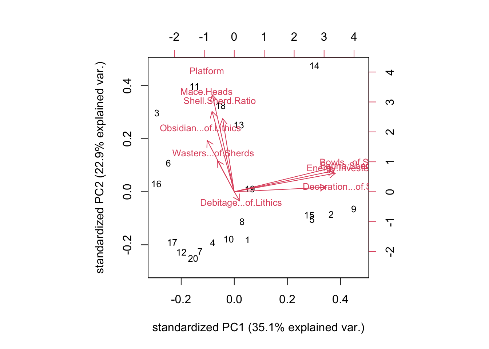

22 Principal Components Analysis (Ch.24)
Where multidimensional scaling uses distance matrices to attempt to reduce the variability in a dataset to something interpretable, principal components analysis uses correlations between variables. As Drennan notes, the math that underlies PCA is not for the faint-hearted. Happily the magic of R is such that even the faint-hearted can employ PCA; the trick is beng able to make sense of the results. These can be interpreted in a similar fashion as MDS results; conceptually we hope to be identifying underlying (undocumented) factors responsible for the patterning in multiple variables. In the case of Drennan’s MDS examples in Ch. 23, wealth is hypothesized to drive the patterning in % bowls, investment in burials, % decorated ceramics, and % fauna - Drennan has not measured wealth directly, but argues that the patterning that MDS reveals in these variables is the result of this previously hidden factor. PCA would look for such a hidden factor through a different method: not by considering the (dis)similarity between cases, but rather by examining the ways in which variables are correlated across cases. Where variables can be demonstrated to be correlated (to co-vary), we infer that to be the result of some previously hidden factor.
22.1 Correlations and Variables
Correlation between variables will be familiar from regression analysis; picture a scatterplot of two variables that are perfectly correlated and the points will far perfectly along a 45\(^\circ\) line, with y increasing as x increases. A matrix of correlations between variables summarizes the correlations for all the various combinations of variables in a dataset.
Generally a principal components analysis in R will quietly build a correlation matrix simply as one of the steps that happens in the background, and you will never see it. We can look at one here, using cor(), to emphasize the logical parallels to MDS.
ixcaq <- read.csv("data/Drennan_datasets/Drennan_2009_Table21-1.csv", header=T)
ixcaq_cormatrix <- cor(ixcaq[,2:11]) #excluding first column of Household ID#s
ixcaq_cormatrix## Bowls...of.Sherds Decoration...of.Sherds
## Bowls...of.Sherds 1.0000000000 0.72678585
## Decoration...of.Sherds 0.7267858492 1.00000000
## Energy.Invested.in.Burials 0.8758430245 0.75181923
## Mace.Heads -0.0776801253 -0.21491304
## Fauna.Sherd.Ratio 0.8518046371 0.73618569
## Platform 0.0698137835 -0.11722529
## Shell.Sherd.Ratio 0.0002272341 -0.12867837
## Wasters...of.Sherds -0.1324276494 0.08451137
## Debitage...of.Lithics 0.1222637669 -0.08197672
## Obsidian...of.Lithics -0.0351885785 -0.12542541
## Energy.Invested.in.Burials Mace.Heads
## Bowls...of.Sherds 0.87584302 -0.077680125
## Decoration...of.Sherds 0.75181923 -0.214913037
## Energy.Invested.in.Burials 1.00000000 -0.056819099
## Mace.Heads -0.05681910 1.000000000
## Fauna.Sherd.Ratio 0.92567782 -0.011904762
## Platform -0.05681910 0.523809524
## Shell.Sherd.Ratio -0.02407279 0.744639567
## Wasters...of.Sherds -0.05314075 -0.025051664
## Debitage...of.Lithics -0.04223169 0.002283459
## Obsidian...of.Lithics -0.13193526 0.065042662
## Fauna.Sherd.Ratio Platform Shell.Sherd.Ratio
## Bowls...of.Sherds 0.85180464 0.06981378 0.0002272341
## Decoration...of.Sherds 0.73618569 -0.11722529 -0.1286783716
## Energy.Invested.in.Burials 0.92567782 -0.05681910 -0.0240727884
## Mace.Heads -0.01190476 0.52380952 0.7446395673
## Fauna.Sherd.Ratio 1.00000000 -0.04497354 0.0354590270
## Platform -0.04497354 1.00000000 0.5612308069
## Shell.Sherd.Ratio 0.03545903 0.56123081 1.0000000000
## Wasters...of.Sherds -0.09618602 0.32288812 -0.2362898329
## Debitage...of.Lithics 0.01420819 -0.01141729 0.1887392489
## Obsidian...of.Lithics -0.15104352 0.63741809 -0.2034200281
## Wasters...of.Sherds Debitage...of.Lithics
## Bowls...of.Sherds -0.13242765 0.122263767
## Decoration...of.Sherds 0.08451137 -0.081976724
## Energy.Invested.in.Burials -0.05314075 -0.042231691
## Mace.Heads -0.02505166 0.002283459
## Fauna.Sherd.Ratio -0.09618602 0.014208187
## Platform 0.32288812 -0.011417293
## Shell.Sherd.Ratio -0.23628983 0.188739249
## Wasters...of.Sherds 1.00000000 -0.395091981
## Debitage...of.Lithics -0.39509198 1.000000000
## Obsidian...of.Lithics 0.59311141 -0.282578384
## Obsidian...of.Lithics
## Bowls...of.Sherds -0.03518858
## Decoration...of.Sherds -0.12542541
## Energy.Invested.in.Burials -0.13193526
## Mace.Heads 0.06504266
## Fauna.Sherd.Ratio -0.15104352
## Platform 0.63741809
## Shell.Sherd.Ratio -0.20342003
## Wasters...of.Sherds 0.59311141
## Debitage...of.Lithics -0.28257838
## Obsidian...of.Lithics 1.00000000The cor() function returns the entire matrix, rather than just the bottom half, but a quick look will show that it’s mirrored around the 1.000000 values that occupy the diagonal. It can be read like a similarity matrix; the high values at the intersection of ‘%Bowls’ and ‘%Decoration’ or of ‘%Bowls’ and ‘Energy Invested in Burials’ indicate that those variables are relatively highly correlated.
A full PCA in R can be carried out with the princomp() function.
## List of 7
## $ sdev : Named num [1:10] 1.874 1.514 1.449 0.942 0.688 ...
## ..- attr(*, "names")= chr [1:10] "Comp.1" "Comp.2" "Comp.3" "Comp.4" ...
## $ loadings: 'loadings' num [1:10, 1:10] 0.485 0.458 0.504 -0.11 0.498 ...
## ..- attr(*, "dimnames")=List of 2
## .. ..$ : chr [1:10] "Bowls...of.Sherds" "Decoration...of.Sherds" "Energy.Invested.in.Burials" "Mace.Heads" ...
## .. ..$ : chr [1:10] "Comp.1" "Comp.2" "Comp.3" "Comp.4" ...
## $ center : Named num [1:10] 0.267 0.029 1.9 0.3 0.288 ...
## ..- attr(*, "names")= chr [1:10] "Bowls...of.Sherds" "Decoration...of.Sherds" "Energy.Invested.in.Burials" "Mace.Heads" ...
## $ scale : Named num [1:10] 0.111 0.0223 0.7681 0.4583 0.165 ...
## ..- attr(*, "names")= chr [1:10] "Bowls...of.Sherds" "Decoration...of.Sherds" "Energy.Invested.in.Burials" "Mace.Heads" ...
## $ n.obs : int 20
## $ scores : num [1:20, 1:10] 0.417 3.061 -2.438 -0.678 2.458 ...
## ..- attr(*, "dimnames")=List of 2
## .. ..$ : NULL
## .. ..$ : chr [1:10] "Comp.1" "Comp.2" "Comp.3" "Comp.4" ...
## $ call : language princomp(x = ixcaq[, 2:11], cor = TRUE)
## - attr(*, "class")= chr "princomp"The str(ixcaq_pc) command lets us examine the object produced by running princomp(). As the ‘Value’ section of ?princomp will tell you, this object is a list that has seven elements. These include:
- The standard deviations of the components (accessed by
ixcaq_pc$sdev). Squaring produces the variances (eignenvalues) that Drennan gives in Table 24.1. An eigenvalue is the amount of variance in the dataset relative to a particular direction (the eigenvector, of which there are as many as there are dimensions - variables - in the dataset). - The component loadings (
ixcaq_pc$loadings) reflect the contribution of each of the original ten variables to the component. Theprincomp()function standardizes the loadings so that the sum of the squared loadings equals 1. Drennan uses loadings (e.g. in Table 24.2) that are standardized by the variance (eigenvalue) of the component. We can calculate these by multiplying the loadings thatprincomp()returns by the standard deviations (see below). - The means and standard deviations of the original variables (
ixcaq_pc$centerandixcaq_pc$scale). - A matrix of the rows (cases/observations) and the component scores (
ixcaq_pc$scores). The scores give us a way of plotting the original data in a reduced space (fewer than the 10 dimensions represented by the original data). - The command we used to produce these results (
ixcaq_pc$call).
We can use the ixcaq_pc object to produce Tables 24.1 and 24.2, then.
Table24.1 <- data.frame(Eigenvalue = round(ixcaq_pc$sdev^2,3), Eigenvalue.per.TotalVariables =
(round((ixcaq_pc$sdev^2)/10,4))); Table24.1## Eigenvalue Eigenvalue.per.TotalVariables
## Comp.1 3.511 0.3511
## Comp.2 2.291 0.2291
## Comp.3 2.100 0.2100
## Comp.4 0.887 0.0887
## Comp.5 0.473 0.0473
## Comp.6 0.326 0.0326
## Comp.7 0.213 0.0213
## Comp.8 0.110 0.0110
## Comp.9 0.063 0.0063
## Comp.10 0.027 0.0027Table 24.2 is a bit trickier, because we have to standardize the loadings by the eigenvalues. To perform the same function (multiplying by the standard deviation, in this case) on each column of a data frame, we can use sweep().
##
## Loadings:
## Comp.1 Comp.2 Comp.3 Comp.4 Comp.5 Comp.6 Comp.7
## Bowls...of.Sherds 0.909 0.223 0.193 0.145
## Decoration...of.Sherds 0.858 0.193 -0.261 0.257 -0.289
## Energy.Invested.in.Burials 0.944 0.173 -0.127 0.125
## Mace.Heads -0.207 0.750 -0.399 -0.285 -0.320 -0.223
## Fauna.Sherd.Ratio 0.933 0.197 -0.144 0.110
## Platform -0.205 0.905 0.111 0.251 0.207
## Shell.Sherd.Ratio -0.108 0.683 -0.640 -0.171 -0.118 0.207 0.130
## Wasters...of.Sherds -0.157 0.291 0.788 -0.481 -0.128 0.128
## Debitage...of.Lithics -0.593 0.747 -0.249 -0.125
## Obsidian...of.Lithics -0.253 0.479 0.710 0.327 0.257 -0.116
## Comp.8 Comp.9 Comp.10
## Bowls...of.Sherds 0.238
## Decoration...of.Sherds
## Energy.Invested.in.Burials -0.193
## Mace.Heads
## Fauna.Sherd.Ratio -0.198 0.122
## Platform -0.101
## Shell.Sherd.Ratio
## Wasters...of.Sherds
## Debitage...of.Lithics
## Obsidian...of.Lithics
##
## Comp.1 Comp.2 Comp.3 Comp.4 Comp.5 Comp.6 Comp.7 Comp.8 Comp.9
## SS loadings 3.511 2.291 2.10 0.887 0.473 0.326 0.213 0.110 0.063
## Proportion Var 0.351 0.229 0.21 0.089 0.047 0.033 0.021 0.011 0.006
## Cumulative Var 0.351 0.580 0.79 0.879 0.926 0.959 0.980 0.991 0.997
## Comp.10
## SS loadings 0.027
## Proportion Var 0.003
## Cumulative Var 1.000A couple of things to note about ixcaq_pc_loadings:
* First, in fact it combines Tables 24.1 and 24.2, including the former (in slightly different format) at the bottom. In addition to the eigenvalues (labeled ‘SS loadings’) and the eigenvalues as a proportion of the number of variables (‘Proportion Var’), this lower table also includes the cumulative amount of variation accounted for by each component.
* Second, while the values in the upper table now match Table 24.2, it’s different in a couple of respects. You’ll notice that princomp() by default doesn’t display low values, so anything <.10 shows up as a blank in the table (if you want to see these, try ixcaq_pc_loadings[]); it also defaults to showing the loadings on all the components, while Drennan truncates his table after the first five (quite reasonably, because a PCA that makes you think about more than half as many dimensions as you already had probably isn’t doing you any favors; the whole point is to reduce variability). Drennan has also reordered the data in Table 24.2 to highlight the highest loadings on each component. We could come up with a function to do this, but since it’s not something we’ll do again it’s simpler to just reorder the rows in the table manually:
Note that the result demonstrates interesting things about both PCA and Springer. The positive and negative signs that we have generated for Component 1 are opposite those that Drennan gives, because in PCA results only the relative relationships of positive/negative matter. The other components that we’ve produced have a mix of positive and negative signs, while Drennan’s numbers are all positive, demonstrating that Springer’s copy-editing is half-assed: this is in fact a misprint, and some of the values in Drennan’s table should be negative.
22.2 Carrying Out the Analysis
Drennan does not provide any visual displays of PCA, but these can be quite useful. These are most intelligible as bivariate plots that display only two of the principal components, and are easy to construct in R using biplot(). We’ll monkey with the axis labels to make them more informative, using the results we’ve calculated for how much variance in the data is explained by each component.
biplot(ixcaq_pc, cex = .8, xlab =
paste0("standardized PC1 (", round(Table24.1[1,2]*100, 1), "% explained var.)"),
ylab = paste0("standardized PC2 (", round(Table24.1[2,2]*100, 1), "% explained var.)")) #defaults to first two components
The plot uses the two principal components that we specify (by default the first two, i.e. those that explain the most variation in the dataset) as the x and y axes, and plots the cases (each row or observation - households, in this case) in that space. It also plots the original variables, as arrows (vectors) originating at the plot’s (0,0) point; the direction of the arrows reflects the component loadings and the length of the arrows reflects the amount of variance in that variable explained by that component. The arrows thus give a sense of which variables contribute most to each component (or, thought about the other way around, which components account for which variables). This is apparent in how this biplot and Table 24.2 complement one another. The red arrows roughly parallel to Component 1 indicate that %Decorated, %Bowls, %Fauna, and Energy Invested in Burials are strongly related to Component 1; not coincidentally these are the four loadings that Drennan highlights in Table 24.2 (p304). We can also see that three variables (Platforms, Mace heads in burials, and Shell/Sherd ratio) have strong loadings on Component 2, with to other variables (%Obisidian and %Wasters) somewhat related as well. The plotted locations of households in this space suggest that Households 2, 5, 9, and 15 score highly on PC1, while Households 8, 11, and 13 score highly on PC2. This is consistent with the groupings suggested by MDS in Ch. 23.
We can look at other components than the first two by using the choices= argument to biplot().
biplot(ixcaq_pc, cex = .8, choices = c(1,3), xlab =
paste0("standardized PC1 (", round(Table24.1[1,2]*100, 1), "% explained var.)"),
ylab = paste0("standardized PC3 (", round(Table24.1[3,2]*100, 1), "% explained var.)"))
In this case looking at PC3 makes it clear that the variables %Wasters and %Obsidian, which on the previous plot looked like they might be related to the variables strongly associated with PC2, are much more related to PC3, and in a way very different than Mace heads, Platforms, and Shell/Sherd ratio. That is, looking at the third principal component helps us to better interpret both the significance of PC2 and the overall patterning.
To experiment with rotation of the component loadings (see Drennan p306) we have to turn to a different implementation of PCA in R: principal(), from the psych package.
ixcaq_pcrot <- principal(ixcaq[,2:11], nfactors = 5, rotate = "varimax")
Table24.3 <- round(ixcaq_pcrot$loadings[c(3,5,1,2,7,4,6,10,9,8),1:5], 3); Table24.3## RC1 RC2 RC3 RC4 RC5
## Energy.Invested.in.Burials 0.960 -0.008 -0.044 -0.068 -0.047
## Fauna.Sherd.Ratio 0.950 0.045 -0.061 -0.020 -0.068
## Bowls...of.Sherds 0.937 -0.027 0.129 0.127 -0.151
## Decoration...of.Sherds 0.854 -0.128 -0.164 -0.022 0.272
## Shell.Sherd.Ratio -0.002 0.946 -0.058 0.151 -0.103
## Mace.Heads -0.068 0.908 0.099 -0.087 -0.023
## Platform 0.008 0.597 0.744 0.087 0.155
## Obsidian...of.Lithics -0.089 -0.088 0.934 -0.166 0.237
## Debitage...of.Lithics -0.004 0.051 -0.097 0.970 -0.168
## Wasters...of.Sherds -0.041 -0.086 0.374 -0.224 0.874Note that the signs for the first, fourth, and fifth components (labeled ‘RC1’ rather than ‘PC1’ to show that it is rotated) are opposite Drennan’s, and that we’ve had to reorder the rows manually to match Drennan’s ordering.